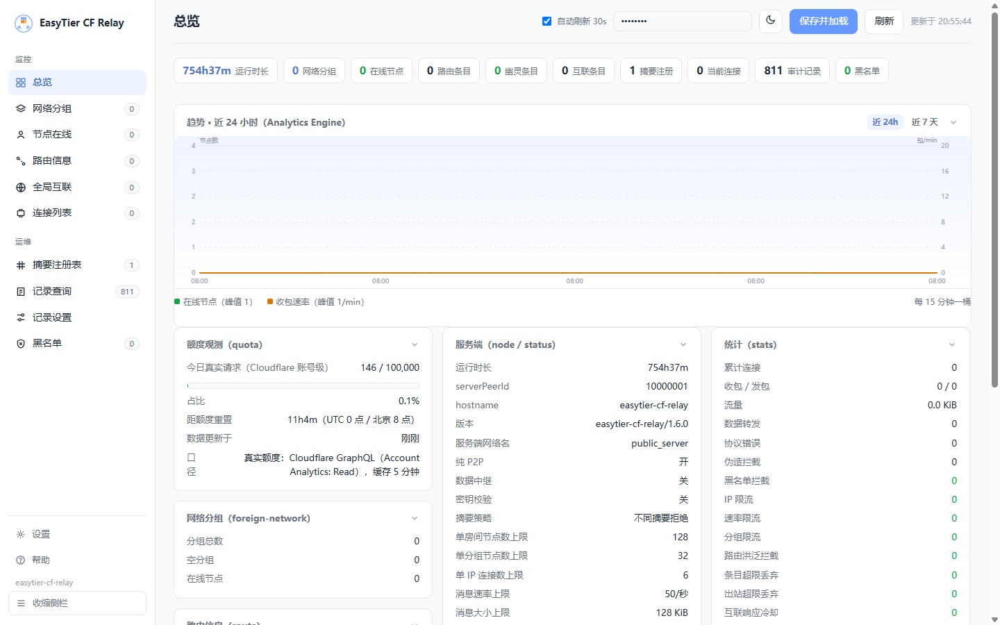

协议兼容
字节级对齐官方实现：握手 / OSPF 路由同步 / PeerCenter / 包转发，已用 easytier-core 2.6.4 官方客户端实测验证。
协议实现详解 →
在 Cloudflare Workers 免费额度内运行 EasyTier 自建 WebSocket 节点——无需 VPS，
客户端 -p wss://<你的域名>/ 即可组网。纯 P2P 优先（中继仅兜底），
全 Hibernation API 空闲成本趋零。
协议字节级对齐官方实现，在免费额度内把「幽灵节点」等第三方实现的痛点逐一解决。
字节级对齐官方实现：握手 / OSPF 路由同步 / PeerCenter / 包转发，已用 easytier-core 2.6.4 官方客户端实测验证。
协议实现详解 →宣告 avoid_relay_data，客户端优先直连打洞，中继只做兜底——可配置为完全关闭数据面（严格纯 P2P）。
网络名 + 密钥摘要（SipHash-1-3，与官方同算法）分组隔离，支持 NETWORK_SECRETS 服务端密钥校验。
握手超时 / 空闲超时 / 主动探活 + direct 覆盖与 reporter 追踪 / 路由老化 / 空分组自动删除，彻底解决幽灵路由条目。
六重防线 →零指纹 /health、fail-closed 双门禁、三层事前限流、未知路径 tar pit、转发校验源身份、防路由投毒与摘要抢占。
侧边栏九大功能页：总览 / 节点 / 路由 / 互联 / 连接 / 分组 / 摘要注册 / 记录 / 黑名单；服务端分页、各块统计、单个与批量操作。
管理端说明 →六类事件记录进 Workers KV（每类只占一条键，全生命周期共 11 条），支持「全部」跨类型合并查询；管理员登录与操作为硬审计。v1.6 起可选 IP 打码（AUDIT_IP_MASK）与按天留存清理（AUDIT_RETENTION_DAYS）。
四类黑名单（节点 / 分组 / 摘要 / IP），操作自动拉黑；IP 拦截在 Worker 入口边缘层直接拒绝，重连风暴不唤醒 DO。
黑名单行为 →Hibernation + alarm 自适应排程，典型小网络日请求量约为限额的 5%，空房间低至 288 请求/天，空闲成本趋零。
成本与额度 →/metrics?format=prometheus 输出 25 个 easytier_ 指标可接 Grafana；可选配置账号级真实额度（GraphQL，token 只在服务端）；绑定 Analytics Engine 后总览新增近 24h / 7 天趋势折线（纯 SVG，零图表库）。
路由洪泛 / 请求放大 / 出站与状态总量多维上限（全部 env 可调，0 = 关闭），均为处理途中同步检查——正常用户免费额度零开销；管理端新增防线计数与摘要抢占嫌疑记录（含来源 IP）。
防线设计 →
免费 Cloudflare 账号 + Node ≥ 18 + Wrangler v4，5 分钟完成部署。
npm install
npx wrangler login # 浏览器授权
npx wrangler deploy # 部署
# 验证（把 <name> 替换为 wrangler 输出的 Worker 名）
curl https://easytier-cf-relay.<你的子域>.workers.dev/health
# 期望: {"ok":true}
配置项可先用 wrangler.toml 生成器 生成；不绑定自定义域名时使用默认
*.workers.dev 域名即可。
easytier-core --network-name myteam --network-secret s3cret! \
--hostname node-a -p wss://<你的域名>/
任意平台（Windows / macOS / Linux / 手机端）填相同的网络名与密钥即可互见；
节点地址填 wss://<你的域名>/（路径任意）。
easytier-core \
--network-name myteam \
--network-secret s3cret! \
--hostname node-a \
-p wss://et.example.com/myteams3cret!wss://et.example.com/（新建一个节点条目填入即可）docker run --name easytier -d --network host --cap-add NET_ADMIN \
easytier/easytier:latest \
--network-name myteam --network-secret 's3cret!' \
-p wss://et.example.com/
本地开发：npm run dev（wrangler dev，端口 8787），用官方客户端连接 ws://127.0.0.1:8787/ 验证。
完整步骤、域名绑定与 FAQ 见 部署手册。
Worker 入口负责路由与边缘防护，Durable Object 负责协议会话与转发；纯 P2P 优先，中继仅兜底。
RELAY_DATA=0 完全关闭）免费计划即可运行（SQLite 后端 Durable Objects 已对免费计划开放）。10 客户端典型小网络估算约 5,400 请求/天，约为限额的 5%。
| 维度 | 免费计划额度 | 说明 |
|---|---|---|
| 请求 | 100,000 / 天 | 含 WS 连接建立、入站 WS 消息（20:1 折算）、alarm 唤醒 |
| Duration | 13,000 GB-s / 天 | Hibernation 状态不计费——全用 Hibernation API，空闲时成本趋近零 |
| 存储 | 5 GB / 账户 | 仅存路由元数据（KB 级） |
| KV 写 | 1,000 / 天 | 启用 KV 审计后：事件按 RECORD_FLUSH_MS（默认 10 分钟）节流镜像，每键理论最大 144 写/天；拒绝/查看事件不产生写入 |
| KV 读 | 100,000 / 天 | 冷启动且 DO storage 为空时读取（每键一次）+ WS 升级的边缘黑名单检查（v1.4.0 起 isolate 缓存，默认每 30s 至多 1 次读） |
| 单 DO 吞吐 | ~1,000 req/s（软限制） | 单房间 64 peer 远达不到 |
空房间经 alarm 空闲退避后仅 288 请求/天；被拉黑客户端的重连风暴在 Worker 入口即被 403，不唤醒 DO、零审计写入。 完整核算与升级选项见 部署手册 · 成本与额度。
诚实说明与官方 easytier-core 的差异，避免踩坑。
| 限制 | 说明 | 影响 |
|---|---|---|
| 不支持 secure mode（Noise） | v2.6.0+ 的可选加密握手。收到 NoiseHandshakeMsg 包会关闭连接（4003） | 客户端使用默认（非 secure）模式即可 |
| 不执行 P2P 打洞 | Workers 无 UDP 出口。打洞由客户端之间直接进行（本节点提供 rendezvous/路由信息） | 双端均严格 NAT 时只能走中继 |
| 不做 KCP / QUIC 协议转换 | KcpSrc/KcpDst/Quic* 包仅按 to_peer_id 转发 | 无（这些包本来就是端到端的） |
| 不压缩 RPC | 出站 algo=None | 微量带宽差异，无功能影响 |
| 单房间串行（DO 单线程） | 单 DO 软限制 ~1000 req/s；更大规模需房间分片（ROOM_HEADER/QUERY） | 64 peer 默认上限内无感知 |
| 同组内 peerId 可被顶替 | EasyTier 协议固有语义（重连顶替），组内成员互信（共享网络密钥） | 顶替路径状态一致性已修复（先清后注）；组间风险由分组隔离与 NETWORK_SECRETS 防守 |
未配置 NETWORK_SECRETS 的抢占风险 | 先到者注册摘要后，不同密钥的后来者被拒（STRICT_DIGEST 隔离语义的另一面） | squat-suspect 审计可见攻击 IP；删除分组/摘要注册可解锁；配置 NETWORK_SECRETS 即免疫（注册表自愈） |
| IPv6 子网信息 | RoutePeerInfo 原样透传（raw 字节路径保留官方字段），但服务端自身不宣告 v6 | 客户端间 v6 组网不受影响 |
完整列表与实现细节见 技术文档 · 已知限制。
三大文档已全文收录为网页版，支持「完整 / 精炼」两种阅读模式。
本项目站在前人肩膀上。
另一种选择：【教程】Cloudflare Tunnel 自建 EasyTier 共享节点（无 Docker，自定义域名 wss:// 接入）。
免责声明
本项目仅供学习交流使用，请勿用于任何商业用途或非法用途。使用本项目代码造成的任何后果，原作者概不负责。